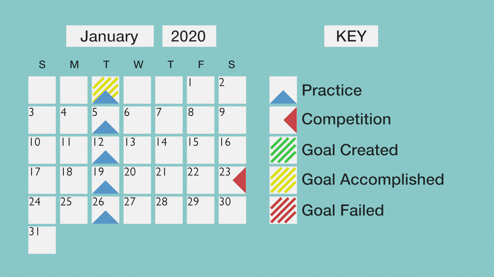
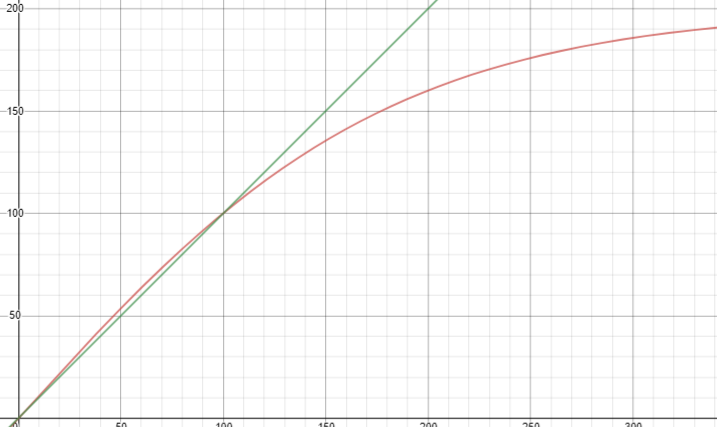

January Progress Entries¶
January Timeline¶
Completed Goals¶
15 second auton routine
Remaing goals for West Ashley Tournament¶
60 second auton routine
126 driver skills
Autonomous rotine with 3859W
1/5/2021¶
Attendance: ☐ Brody, ☐ Derek, ☐ Dylan, ☐ Ian, ☑ Jack¶
Today we revised our slew code for our lateral movements. Our previous slew code was linear and we passed the rate that served as the slope of the slew code. We wanted to redo our slew code because we found it to be too slow at the beginning and that it accelerates too fast at the end. Kent from team 901J, a team from Japan was nice enough to show us a limit function that works similar to our needs. Upon testing this code we are very happy with it’s performance as it fixes the problems we had with our pure linear approach. It is faster as the beginning but becomes weaker at the half way mark. In addition to revising our slew code we also moved our drive base gears, motors and, wheels by two holes. We did this because we needed more room for the intakes to enter the middle goal. With the wheels at their original position, the intakes could not reach far in enough to descore a ball from the middle goal but with this change to our wheel position, we are now able to descore the middle goal.
import numpy as np
import matplotlib.pyplot as plt
import scipy.stats as stats
mu = 0
std = 1
x = np.linespace(start=-4, stop=4, num=100)
y = stats.norm.pdf(x, mu, std)
plt.plot(x,y)
plt.show()